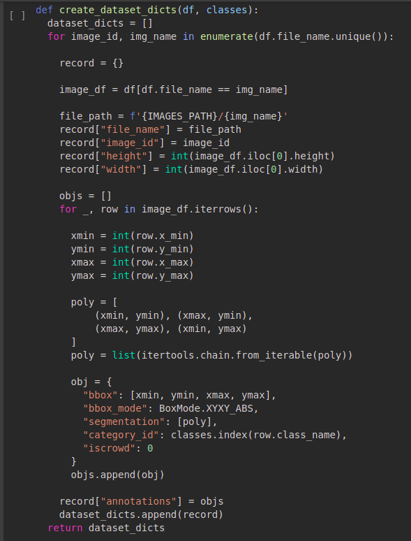
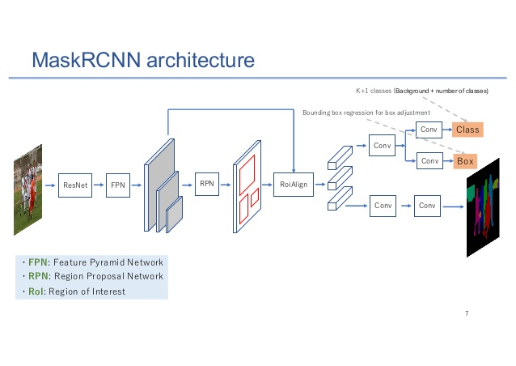

FACE Detection using PyTorch
- 360 DT
Face Detection is the technology used to detect human faces. It mainly focuses on the examination of the frontal face.
This is useful for:
- ● Helping the blind: Listerine has developed a groundbreaking facial recognition app that helps the blind using recognition.
- ● Forensic Investigations.
- ● Detecting age, gender, and emotional features of the face.
- ● Facial Identification.
Tired of Recognizing Faces using classical OpenCV method (Haar Cascade)?
In this blog you will learn to:● Prepare an image dataset with data cleaning.
● Work with deep learning models for face detection in the images.
● Extend this model for face and object detection.
● Work with detectron2 (A high-performance codebase for object detection).
You must be curious to work with Detectron2, aren’t you?
Detectron is a high-performance next-generation platform for object detection and segmentation. This model is similar to the YOLO models and is able to create a bounding box around the object to be detected.
It is developed by Facebook AI Research and is used widely in the field of Computer Vision.
Detectron2 uses PyTorch and allows rapid data training and its real power lies on the pre-trained models available at GitHub Repository.
It includes implementations of many object detection algorithms like Mast R-NN, RetinaNet, Faster R-CNN, TensorMask,etc.
It is Super Easy to tune your model with Detectron2.
If you don’t have a good GPU, use Google Colab.
Now let’s Install some Libraries required for Detectron2:
1.COCO dataset is Installed.
COCO is a large image dataset designed for object detection, segmentation, stuff segmentation, and caption generation.
2. Now Let’s Download and install the Detectron2 package from Github repo.
3. You need to restart your Jupyter Notebook.
4. Import all the important Python Libraries.
FACE DETECTION DATASET
I have downloaded the Face Detection Dataset from Kaggle and uploaded it to my Google Drive.The dataset was prepared by DataTurks and contains 500 Images with 1100 Faces manually tagged with Bounding Box.
You can download the same using:
DATA PROCESSING
This Kaggle Dataset contains only the URLs and annotations of the Images. Hence , we need to download the images.

Let’s put the data into a data frame using Pandas.
We have 409 Images and 1132 annotations and let’s save them to the drive.
Now Let’s use the OpenCv2 library to load the images from the dataset.
To convert the color from BGR To RGB use the function cv2.cvtColor.
INTER_AREA – resampling using pixel area relation.
Let’s see this annotated image from the dataset.
Give a Look at another annotated Image.
FACE DETECTION WITH DETECTRON 2
1. Let’s Save 10% of data for training.
2. The next parts are written in a bit more generic way. Obviously, we have a single class - face. But adding more should be as simple as adding more annotations to the data frame:
3. Next, we’ll write a function that converts our dataset into a format that is used by Detectron2:

4. We convert every annotation row to a single record with a list of annotations. You might also notice that we’re building a polygon that is of the exact same shape as the bounding box. This is required for the image segmentation models in Detectron2.
5. Unfortunately, the evaluator for the test set is not included by default. We can easily fix that by writing our own trainer:
6. The evaluation results will be stored in the coco_eval folder if no folder is provided.
We will use the Mask R-CNN X101-FPN model. It is pre-trained on the COCO dataset and achieves very good performance. The downside is that it is slow to train but the accuracy is high.
MASK R-CNN
● The method is called Mask R-CNN, extends Faster R-CNN by adding a branch for predicting an object mask in parallel with the existing branch for bounding box recognition.
● Mask R-CNN is a deep neural network used to solve the image problems in machine learning.
● The model creates bounding boxes and segmentation masks for every instance in a video or image.
● Mask R-CNN is simple to train and adds only a small overhead to Faster R-CNN, running at 5 fps.
● The model is trained on the COCO dataset including instance segmentation, bounding-box detection, and other import features.

Wanna dive deeper into Mask R-CNN?
Check the GitHub repository Source Code.
Let’s load the config file and the pre-trained model weights:
7. Identify the datasets to be used for training and evaluation:
8. This is the fine-tuning of our model using Hyper Parameter Tuning.
We are familiar with these parameters (batch size, max number of iterations, and learning rate) we have a couple of new interesting parameter:
● WARMUP_ITERS - The warm-up iteration will ensure that the system will arrive at a steady-state prior to taking measurements.
● STEPS - the checkpoints (number of iterations) at which the learning rate will be reduced by GAMMA.
● GAMMA-This helps in reducing the learning rate after every iteration of our model.
9. Now we have to specify our model about the classes and period at which we will estimate the test set. We have created a batch_size of 64 Images.
10. We will train our model using our trainer that we have created:
But the training of this custom trainer takes so much time so I have downloaded the pre-trained weights of this model and uploaded it to google drive.
You can use the below code as below code and we can start making predictions by loading the model and setting a minimum threshold of 85 percent and we can change this value to get better results.
11. Let’s run the evaluator with the trained model:

Finding Faces in Images
12. Now we will create a folder and we will save all predicted annotations in the test data set.
Let’s have a look at some results of our model below:
I have applied this model using my image below
Not bad. Not bad at all. I suggest you explore more images on your own, too!
Conclusion
Congratulations! You now know the basics of Detectron2 for object detection! You might be surprised by the results, given the small dataset we have. That’s the power of pre-trained Models:
● Check out the source code at our Github Repository.
● Learn more about Mask F-RCNN.
You learned how to:
● Prepare a custom dataset for face detection with Detectron2.
● Use (close to) state-of-the-art models for object detection to find faces in images.
● You can extend this work for face recognition and object detection.
References
● Face Detection in Images.
● Detectron2 on GitHub.
● Object Detection -IOU-Intersection Over Union.